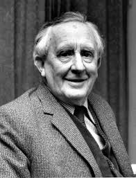
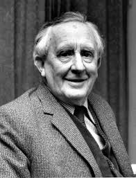
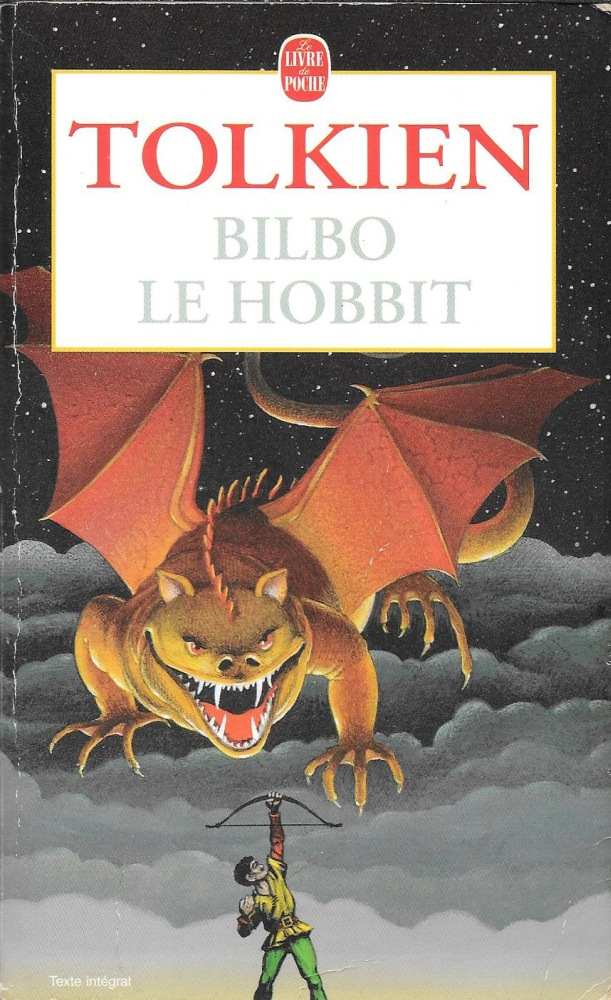
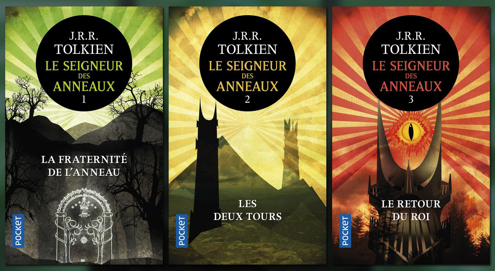

John Ronald Reuel Tolkien, plus connu sous la forme J. R. R. Tolkien, est un écrivain, poète, philologue, essayiste et professeur d'université britannique né le 3 janvier 1892 à Bloemfontein (Afrique du Sud) et mort le 2 septembre 1973 à Bournemouth (Royaume-Uni).
 

Ses deux romans les plus connus, Le Hobbit et Le Seigneur des anneaux, prennent place dans l'univers fictif de la Terre du Milieu dont il développe la géographie, les peuples, l'histoire et les langues durant la majeure partie de sa vie.
 Tolkien était également un grand linguiste qui a inventé des nombreuses langues pour perfectionner l'univers de ses romans.